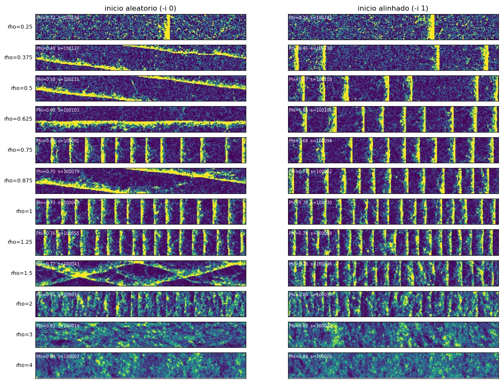

Projeto de ciência de dados · física computacional
Uma rede neural aprendeu a regra de um bando. E o bando apareceu.
Bandos de pássaros, cardumes, colônias de bactérias e multidões se movem de forma coordenada sem ninguém no comando. Cada indivíduo segue regras locais simples, e o padrão coletivo surge da soma dessas interações.
O modelo de Vicsek (1995) é a versão mínima desse fenômeno: partículas andam com velocidade constante e, a cada passo, seguem a direção média das vizinhas próximas, com um pouco de ruído. Mesmo tão simples, ele passa de desordem a movimento coletivo e forma bandas densas que atravessam o sistema.
A ideia do projeto é inverter o problema. Uma rede neural observa só trajetórias e tenta aprender a regra de cada partícula. Depois, a rede substitui a regra e roda sozinha: o comportamento coletivo reaparece? No Vicsek a regra exata é conhecida, então cada erro da rede pode ser medido contra um gabarito. É um laboratório controlado para uma pergunta que, com dados reais, quase nunca tem resposta de referência.
Leo Santos Lopes · doutorado em física computacional (UFMG)
- N
- 2.304
- CAIXA
- 96 × 48
- ρ
- 0,50
- v₀ · R
- 0,5 · 1
- RUÍDO
- vetorial
- η
- 0,55
- PASSO
- 0
- Φ
- 0,00
Cada traço é uma partícula; a cor indica o alinhamento com o bando. Φ mede a ordem: 0 = direções ao acaso, 1 = todas iguais. Perto de η ≈ 0,55 a ordem se concentra numa banda que atravessa a caixa. Aumente η para desordenar; diminua para um bando homogêneo.
Contexto: uma regra local, um comportamento global
O que o modelo faz, que fases ele tem, e por que prever bem um passo não basta.
- θi, ri
- direção e posição da partícula i (posições como números complexos)
- R = 1
- raio de interação; a soma inclui a própria partícula
- ni
- número de vizinhas dentro do raio, contando i
- η
- intensidade do ruído; ξi uniforme em [0, 2π), ui uniforme em [−1, 1]
- v₀ = 0,5
- velocidade; ρ = N / (LxLy) é a densidade
A partícula ignora quem está fora do raio. É esse corte em R = 1 que a rede terá de descobrir sozinha (resultado B).


Cada faixa é o fim de uma simulação, com a cor mostrando a densidade local. A densidade média cresce de cima para baixo.
Gás em densidade baixa: direções quase ao acaso. Bandas em densidade intermediária: faixas densas e ordenadas que andam juntas num gás rarefeito. Líquido em densidade alta: ordem homogênea.
As bandas são a assinatura do modelo e o teste mais difícil para a rede: dependem de uma instabilidade coletiva, não aparecem em nenhuma partícula isolada.
Uma rede pode acertar muito bem o próximo passo e ainda assim errar o sistema. Rodando sozinha, ela consome as próprias saídas, e pequenos erros se acumulam, principalmente perto das transições de fase, onde o sistema amplifica perturbações.
Por isso o projeto tem dois testes: o de um passo, contra a distribuição exata do ruído, e o de malha fechada, em que o sistema inteiro é comparado com o modelo exato rodando no mesmo código.
Método
Da simulação ao teste em malha fechada, com o modelo exato como controle em cada etapa.
Simulação
Vicsek em C com lista de células; validado contra Python (alinhamento a 10⁻⁶ rad, vizinhança idêntica, teste KS do ruído).
Campanha no cluster
1.326 simulações em job arrays do SLURM para localizar as transições e gerar os dados de treino.
Dados em grafo
Cada partícula vira uma estrela com as vizinhas até d = 2, no referencial dela. Divisão por semente: 8 treino, 1 validação, 1 teste.
Treino
Cinco arquiteturas que preveem a distribuição inteira do próximo ângulo. Perda comparada com a da distribuição exata.
Malha fechada
Simulador em PyTorch na GPU; a rede substitui a regra e o modelo exato roda no mesmo código.
Cada vizinha manda uma mensagem φ que depende da posição e da direção relativas. O peso de cada mensagem, w(d), depende só da distância e é aprendido: nada diz à rede onde fica o raio. A saída é uma direção mais um histograma de 100 bins para o ruído, e o próximo ângulo é sorteado dessa distribuição.
Os outros modelos
M1 ignora as vizinhas (uma distribuição fixa de giro). M2 é uma rede densa que recebe as 8 vizinhas mais próximas. M3 é uma GNN com média simples das mensagens. M5 é uma GNN com atenção (softmax sobre as vizinhas, como num Transformer). Todos usam a mesma cabeça probabilística; nenhum usa bibliotecas de grafos (agregação com index_add em CSR).
O piso da cabeça (M0h) usa a direção exata e só aprende o formato do ruído: ele mede quanto o histograma de 100 bins perde sozinho (0,008 nat no ruído angular; 0,18 a 0,20 nat no vetorial, onde a densidade exata diverge nas bordas do suporte).
| Simulações | 1.326 (774 jobs SLURM) |
| Estados de treino | gás, bandas e líquido; 10 sementes cada |
| Divisão por semente | 8 treino · 1 validação · 1 teste |
| Amostras de teste | 40.960 por estado e ruído |
| Ruído angular · vetorial | η = 0,40 · 0,55 |
| Densidades de treino | gás ρ = 0,5 (ang.) ou 0,125 (vet.) · bandas ρ = 1 · líquido ρ = 4 |
| Caixa das bandas | 1024 × 128 · 131.072 partículas |
| Hardware | cluster Turing (~200 núcleos) · GPU GTX 1650, 4 GB |
Resultados
Do teste de um passo ao comportamento coletivo. O filtro abaixo muda os painéis A, B, C e destaca o tipo de ruído em D.
A melhor GNN erra a direção por menos de 1°. Sem vizinhos, o erro é de 14° a 35°; com as 8 vizinhas mais próximas, 5° a 8°.
Média de gás, bandas e líquido no conjunto de teste. Laranja: M4, usado nos testes seguintes. Passe o mouse ou toque para ver os valores por estado.
Ninguém disse o raio à rede, e ela achou R = 1. O peso cai de 90% para 10% entre d = 0,97 e 1,02.
Curvas calculadas direto dos pesos treinados, relativas ao peso médio entre d = 0,3 e 0,9. Azul: a regra verdadeira (peso 1 até R, zero depois).
Rodando sozinha, a rede reproduz a ordem do sistema. Nas fases ordenadas (ρ = 2 e 4), a diferença fica entre 0,01% e 0,3%.
9 de 10 condições ficam dentro de ±2σ. O desvio claro é o ruído vetorial com ρ = 1: +1,1% (3,9σ). Na caixa grande, a mesma densidade dá −0,4%.
Mesma condição inicial, duas regras. Em cima, o modelo exato. Embaixo, o M4 treinado só com gás e líquido, que nunca viu uma banda no treino.
Partindo de um bando alinhado, as duas simulações perdem a ordem uniforme e a reorganizam em bandas densas que atravessam a caixa. A curva embaixo acompanha o parâmetro de ordem Φ das duas.
4.608 partículas · ρ = 0,5 (fora do treino de qualquer rede) · η = 0,55 · caixa 192 × 48 · 3.600 passos, um quadro a cada 6. A rede roda com os pesos do projeto numa reimplementação em NumPy que reproduz a perda e o erro de direção do conjunto de teste (0,1966 nat e 0,67° no estado de bandas).
As bandas andam na mesma velocidade: 0,451 por passo nas redes, 0,450 no modelo exato. O que muda é o padrão: 16 bandas perpendiculares no exato, 8 a 10 oblíquas nas redes.

Densidades divididas pela média ρ₀. Velocidade ao longo da normal da banda. Uma semente por fonte.
A rede que nunca viu bandas forma bandas no mesmo limiar do modelo exato. Em ρ = 0,5 a velocidade da banda difere em 0,2%.
Nenhuma destas densidades está no treino das redes. Pontos do modelo exato em 0,3 e 0,35 têm duas sementes; a linha passa pela média.
Nenhuma banda funde ou quebra durante a medida, nas três fontes. Cada faixa vertical é uma banda vista no referencial que anda com ela.


IA e LLMs: o mesmo problema em outra escala
Um modelo de linguagem e esta rede fazem a mesma coisa em essência: preveem a distribuição do próximo passo a partir do contexto e, na hora de usar, geram passo a passo consumindo as próprias saídas.
| Conceito | Neste projeto | Em um LLM |
|---|---|---|
| Tarefa | prever o próximo ângulo de cada partícula | prever o próximo token |
| Saída | distribuição sobre 100 bins (softmax) | distribuição sobre o vocabulário (softmax) |
| Perda | log-verossimilhança negativa, em nats | entropia cruzada: a mesma conta |
| Treino | sempre a partir do estado verdadeiro | sempre a partir do texto verdadeiro (teacher forcing) |
| Uso | malha fechada: a rede lê as próprias saídas | geração: o modelo lê os próprios tokens |
| Risco | erros se acumulam perto das transições | erros se acumulam em sequências longas (exposure bias) |
| Mecanismo | atenção sobre as vizinhas (M5) | atenção sobre o contexto (Transformer) |
| Interpretação | o peso w(d) revela o raio R = 1 | interpretabilidade mecanística |
- Simuladores aprendidos. Modelos de previsão do tempo como o GraphCast (DeepMind, 2023) e simuladores físicos como o GNS (2020) usam redes em grafo como a deste projeto e são avaliados rodando muitos passos em sequência.
- Sistemas com muitos agentes de IA. Quando vários agentes baseados em LLMs interagem, a pergunta é a mesma: um comportamento individual bem avaliado produz um comportamento coletivo aceitável?
- Avaliação. Métricas de um passo, como a perplexidade, não garantem a qualidade da geração. Aqui também: a decisão sobre o modelo vem do teste em malha fechada, não só do NLL.
- Interpretabilidade. Abrir o modelo e encontrar a regra verdadeira (o corte em R = 1) é uma forma pequena e verificável de checar o que a rede aprendeu.
Usei assistentes baseados em LLMs como apoio para escrever e revisar código, planejar análises e montar esta página. A confiança nos resultados vem dos testes, não do assistente: o simulador em C foi conferido contra Python, cada resultado da rede foi comparado com o modelo exato rodando no mesmo código, e os erros encontrados no caminho estão registrados nas notas do projeto.
Como o trabalho foi conduzido
Práticas que valem para este projeto e para qualquer modelo que vai tomar decisões no lugar de uma regra conhecida.
O modelo exato roda no mesmo código, com as mesmas condições e sementes. Cada diferença é reportada com incerteza e escore z.
Treino, validação e teste vêm de simulações diferentes. A época do modelo é escolhida sem olhar o teste.
O erro de um passo guia o treino; a avaliação final é o sistema inteiro rodando sozinho, que é como o modelo seria usado.
Um modelo treinado sem um dos regimes foi avaliado justamente nesse regime, e em densidades que nenhuma rede viu.
Desvios, pontos inconclusivos e erros de configuração ficam documentados ao lado dos resultados, com o próximo teste para cada um.
Sementes explícitas, scripts que retomam de onde pararam e pesos treinados no repositório para refazer a malha fechada sem treinar de novo.
Limitações e próximos passos
| Questão | Situação | Próximo passo |
|---|---|---|
| Uma semente por ponto na maioria das comparações; flutuações (χ) sem barra de erro | aberto | 3 a 5 sementes nos pontos perto das transições |
| Ruído vetorial, ρ = 1, caixa 64 × 64: +1,1% (3,9σ) | investigando | ablação com a direção exata e só o formato do ruído aprendido |
| Nas bandas, número e orientação diferem do modelo exato | aberto | rodar as redes a partir do estado final do modelo exato |
| Todos os dados são sintéticos | planejado | nascimento e morte de partículas; depois, dados reais de movimento coletivo |
Código e ferramentas
- Simulação
- C · lista de células · Mersenne Twister · validação contra Python
- Cluster
- SLURM (job arrays) · bash · retomada por semente
- Dados
- NumPy · grafos egocêntricos em CSR · um .npz por simulação
- Modelos
- PyTorch sem bibliotecas de grafos · cabeça probabilística · GTX 1650
- Malha fechada
- simulador próprio em PyTorch na GPU, com o modelo exato no mesmo código
- Análise e visualização
- NumPy · Matplotlib · Fourier 2D · kimógrafos · D3 nesta página
Código, pesos treinados e tabelas de resultados no repositório do projeto.